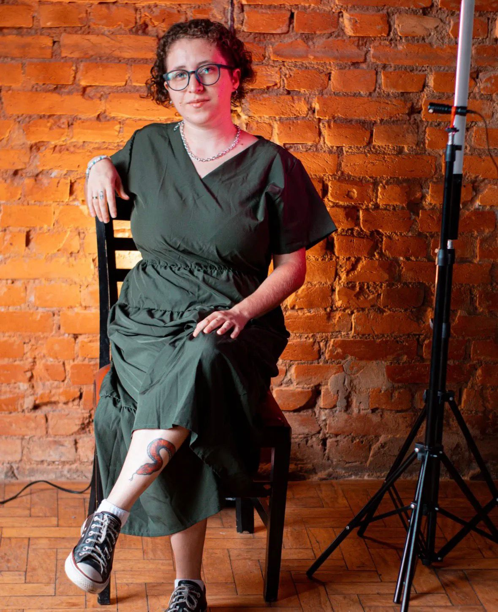

Quem faz
Sobre

Foto da fotógrafa';" />Meu nome é Victoria Cristina, tenho 26 anos, sou fotógrafa e filmmaker há 7 anos.
Sou filha de Oxaguian, orixá do movimento, da renovação e da coragem e carrego essa energia em tudo o que faço, inclusive na forma como enxergo o mundo através da fotografia.
A fotografia não é apenas meu trabalho, é minha missão. Através do audiovisual, busco eternizar sentimentos, contar histórias reais e capturar aquilo que muitas vezes não é dito, mas é sentido. Meu olhar é guiado pela sensibilidade, pela intuição e pelo respeito a cada pessoa e a cada momento que confia sua história a mim.
Acredito que cada clique carrega axé. Gosto de fotografar com verdade, leveza e presença, valorizando detalhes, emoções e conexões genuínas. Para mim, fotografar é estar inteira no agora, é ouvir com os olhos e sentir com o coração.
Sou movida por fé, propósito e pelo desejo constante de evoluir. Assim como Oxaguian, estou sempre em movimento, aprendendo, recomeçando e me reinventando sem perder minha essência.
Se você chegou até aqui, saiba: sua história será cuidada com carinho, respeito e sensibilidade. Porque mais do que imagens, eu entrego memória, sentimento e verdade.
Ver Portfólio